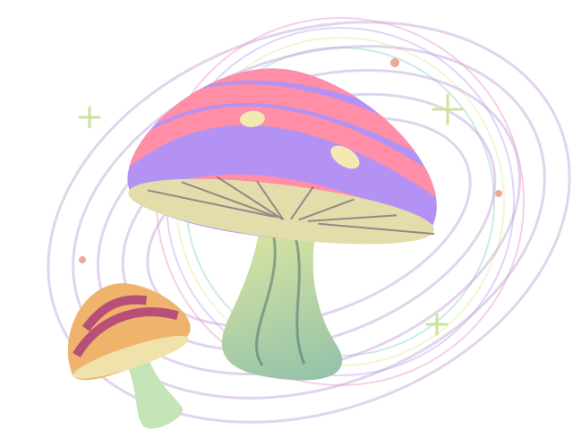

Follow the fungi.
A little rain. The right trees. A promising patch of earth. Explore the conditions that make Switzerland’s forests a little more magical.
Find your forest
Find your forest
Choose a mushroom, explore the map and save a promising place.
Colors show modeled habitat suitability, not known finds or a calibrated probability. Habitat scores also cover forest reserves, where collecting may be forbidden. Check local protection rules before collecting. Unshaded areas have no estimate.
No secret spots.
Just better clues.
Explore Switzerland using a 500-metre national overview and 50-metre local detail. Scores use mapped forest, regional weather and the available terrain and tree data. Zürich tree composition and canopy come from aerial forest surveys; elsewhere tree mix comes from the national forest inventory. Zürich terrain uses 50 m samples; nationwide terrain comes from DHM25/200. National canopy and individual host-tree shares are unavailable and omitted. Recent rain, soil moisture, humidity and temperature come from Open-Meteo.
The ecological weights are provisional assumptions. They have not been trained or validated against mushroom observations. Weather represents a wider area; a fine forest cell is not a local weather measurement. Missing inputs are omitted and shown in the details.
Experimental soil acidity adds up to 3% of score weight for porcini and 5% for chanterelle and bay bolete. Uncertainty reduces this share; missing data and unsupported species are omitted.
See the model & its limits +
The score is a weighted geometric mean: tree partners (forest-edge proxy for Parasol) 20%, canopy 10%, moisture 35%, temperature 15%, terrain 10%, season 10%. Moisture combines soil water (50%), rainfall (30%) and air humidity (20%). Missing factors are omitted and the remaining weights normalized.
Gentler slopes and north-facing terrain receive a modest moisture-retention preference. Those are assumptions, not measured mushroom responses. Sunshine is shown as regional weather context. Reference evaporation reduces the rainfall contribution as a provisional drying proxy; it is not measured forest evaporation. Canopy and aspect represent local shelter. Other soil chemistry, deadwood, fungal presence, picking pressure, frost damage and fine-scale microclimate are not yet modeled. Parasol habitat outside forests is not covered.
Zürich uses 50 m forest and terrain samples. Elsewhere, swissTLM3D forest coverage is rasterized at 25 m and terrain comes from a 200 m source. Aerial survey years vary by location and appear on each cell. Mapped forest reserves retain their habitat scores and have a warning overlay. Collecting may be forbidden there; the map does not establish collection permission.
Good vibes.
Gentle footprints.
Collection rules vary by canton and municipality. Check the rules for your selected location before collecting. Protected areas may prohibit collecting.
Check cantonal collecting rules ↗This map cannot identify mushrooms. Have your collection checked by a local Pilzkontrollstelle ↗ before eating.